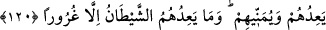

sünnet olan, eteğin traş edilmesi ve koltuk altı kıllarının yolunmasıdır.
Kadınların birbiriyle sevişmeleri de Allah’ın yarattığı sıfatı değiştirmek kabîlinden
olup kadınların erkeklere benzemeye çalışmalarından ibârettir. Merfû bir hadiste:
“Kadınların birbiriyle sevişmeleri, aralarındaki zinâdır.”[159] buyurulmuştur.
Erkeklerin kadınlara benzemesi de böyledir. Bu benzeyiş, hareketlerinde ve
konuşmalarında olur.
Livâta (homoseksüellik) de böyledir. Bunda da vücuttaki pislikleri dışarı atmak için
yaratılan yeri cinsî münasebet için kullanma söz konusudur. Parlak yüzlü gençlerin
yüzlerine şehvetle bakmak ve onlarla düşüp kalkmak da haramdır. Bir rivâyete göre
şöyle buyurulmuştur: “Her kadının yanında iki şeytan, her gencin yanında on sekiz
şeytan vardır.”[160]
Güneşe, aya, yıldızlara ve taşa tapmak da Allah’ın yarattığını değiştirmek
kabîlindendir. Her ne kadar bu varlıklara ibâdet etmek şekil yönünden değiştirme
değilse de sıfat yönünden değiştirmedir. Onlardan hiçbiri, Allah bırakılsın da onlara
ibâdet edilsin diye yaratılmamıştır. Bunların yaratılış sebebi, ne için yaratıldılarsa o
şekilde insanların faydalanmalarıdır.
Allah’ı inkar ve O’na isyan da sıfat yönünden Allah’ın yarattığını değiştirmektir.
Çünkü Allah Teâlâ insanı îman ve tâat süsüyle süslenme istidâdı ile yaratmıştır. Kim
Allah’ı inkar eder ve O’na isyân ederse bu istidâdı boşa harcamış ve sıfat yönünden
Allah’ın fıtratını değiştirmiş olur. Rasûlullah (s.a.v.)’in şu hadîsi de bunu teyid
etmektedir: “Her doğan çocuk İslâm fıtratı üzere doğar. Sonra anne ve babası onu
yahûdî, hristiyan veyâ mecûsî yapar.”[161]
Vücûdumuzdaki uzuvların yaratılış amacı dışında kullanılması da sıfat yönünden
değiştirmeye girer.
“Onlardan belli bir pay alacağım.”, “Onları mutlakâ saptıracağım”, “Muhakkak onları
boş kuruntulara boğacağım.” ve “Kesinlikle onlara emredeceğim.” şeklindeki dört
cümlenin her biri şeytana âit sözlerdir. Şeytan bu cümleleri cisim lisânıyla veya fiil ve
hal lisânıyla söylemiştir.
“Kim Allah’ı bırakır da” şeytanın çağırdığı şeyi Allah’ın emrettiğine tercih edip
O’na itâattan vazgeçer, şeytana itaat eder ve böylece “şeytanı dost edinirse elbette
apaçık bir ziyâna düşmüştür.” Çünkü o tamâmıyla sermâyesini yitirmiş ve cennetteki
mekânını cehennemdekiyle değiştirmiştir.
120- (Şeytan) onlara söz verir ve onları ümitlendirir; halbuki şeytanın onlara söz
vermesi aldatmacadan başka bir şey değildir.
“(Şeytan) onlara” gerçekleştiremeyeceği uzun ömür, sıhhat, âfiyet, makam, mal,